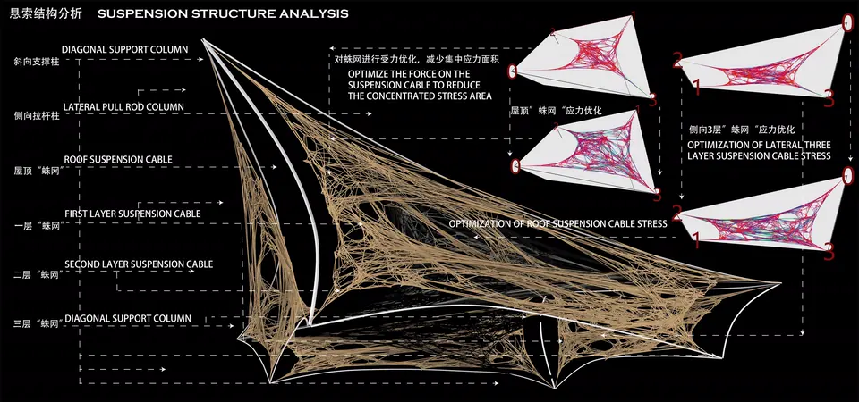
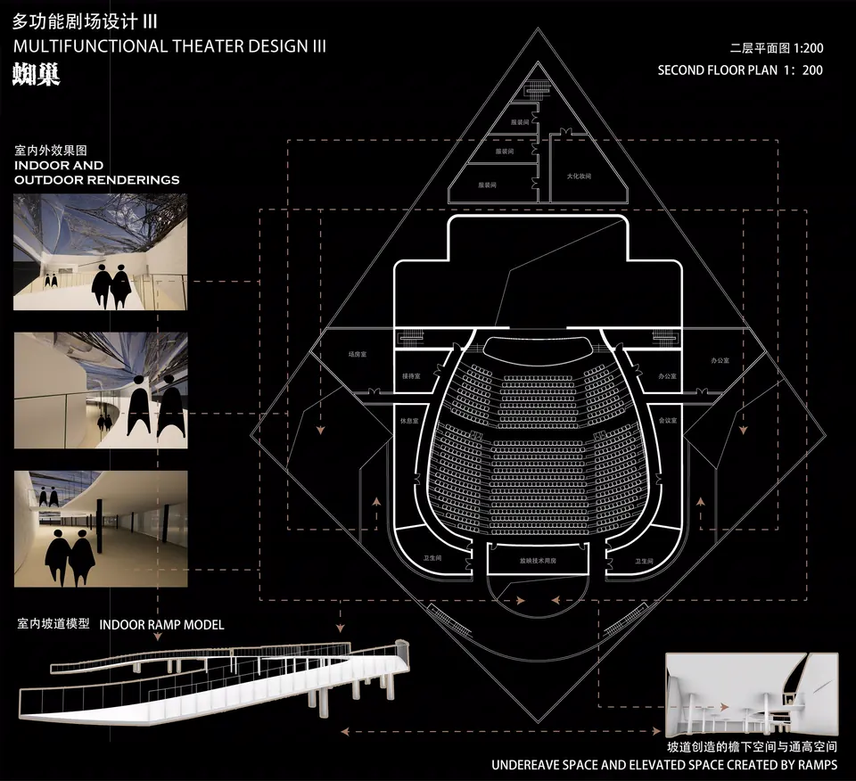

PROJECT 04
多功能剧场Multifunctional Theatre
超图蛛网与悬索结构生成观演空间。Hypergraph webs and suspension structure shape a performance space.
主效果图MAIN RENDERING
主效果图中，蛛网悬索结构包裹剧场主体，在临沂新城的楼群间形成鲜明的城市形象。
In the main rendering, a spider-web suspension structure wraps the theatre volume, giving it a distinct urban presence among the buildings of new Linyi.

场地与问题VENUE & ISSUES
临沂市河东区是市政府所在区，新城区发展迅速、高楼林立，商业圈和居住小区占据城区，而大型公共文化建筑几乎没有——市民需要一个多功能剧场。总平面与技术经济指标：总用地面积约 10000 ㎡，总建筑面积 8650 ㎡，建筑密度 46%，容积率 0.865，绿化率 10%。
Hedong District, seat of the Linyi municipal government, is a fast-growing new town crowded with commerce and housing but almost no major public cultural building — citizens need a multifunctional theatre. General layout with technical-economic indices: site area about 10,000 m², GFA 8,650 m², coverage 46%, FAR 0.865, greening 10%.


蛛网逻辑SPIDER-WEB LOGIC
「蛛网」逻辑：蜘蛛结网的逻辑用数学语言表达就是寻找中心点的问题。Stephen Wolfram 教授发明了超图演变的算法，设计取其逻辑链之一作为蛛网生成的逻辑——用超图演变的底层逻辑，生成建筑的主要结构。
The web logic: in mathematical language, web-spinning is the problem of finding a centre. Taking one logic chain from Professor Stephen Wolfram's hypergraph-evolution algorithm as the generative rule, the underlying logic of hypergraph evolution produces the building's main structure.


悬索结构分析SUSPENSION STRUCTURE
结构组成：斜向支撑柱、侧向拉杆柱，以及屋顶、一层、二层、三层各层「蛛网」悬索。对蛛网进行受力优化，减少集中应力面积——屋顶蛛网与侧向三层蛛网的应力优化分别迭代。
Structure: diagonal support columns and lateral tie columns carry the web of suspension cables at roof level and on floors one, two and three. The web is force-optimised to reduce concentrated stress areas — roof web and lateral three-layer web are each iteratively refined.


一层平面图GROUND FLOOR PLAN
一层平面图（1:200）：售票处、衣帽间、医务间与商店临街布置，大小化妆间、道具间与清洗间围绕舞台组织，观众与演职人员流线分离。
Ground floor plan (1:200): box office, cloakroom, infirmary and shops front the street; make-up rooms, prop and washing rooms wrap the stage. Audience and performer routes stay separate.

声学分析ACOUSTICS
声学分析图以反射路径与颜色变化呈现课程设计中的声波模拟过程。
The acoustic study uses reflection paths and colour changes to present the sound-wave simulation developed for this studio project.

二层平面与室内效果图Second Floor & Interior Renderings
二层平面图（1:200）与多张室内效果图共同呈现坡道、檐下空间、通高区域及办公、会议和观演空间之间的联系。
The second-floor plan (1:200) and interior views present the ramp, sheltered and double-height spaces, and connections between offices, meeting rooms and performance areas.


幕墙与结构大样CURTAIN WALL & STRUCTURE
点支撑式玻璃幕墙大样与蛛网结构大样（蛛网张拉一体化钢结构详图），展示幕墙与悬索的交接。
Detail of the point-supported glass curtain wall and the spider tensioning integrated steel structure, showing the junction of glazing and cables.

剖面图与立面图SECTION & ELEVATION
1-1 剖面图（1:200）：观演厅的升起坡度、檐下坡道空间与蛛网屋盖在剖面上的关系；西立面效果图（1:200）展示幕墙与悬索的交接。
Section 1-1 (1:200): the auditorium rake, the ramped under-eave space and the web roof read together in section; the west elevation (1:200) shows the junction of glazing and cables.


效果图RENDERINGS
两张室外效果图呈现悬索、幕墙与剧场主体在不同视角下的整体关系。
Two exterior renderings present the overall relationship between suspension cables, curtain walls and the theatre volume from different viewpoints.